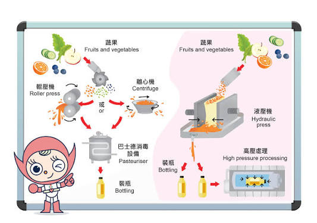
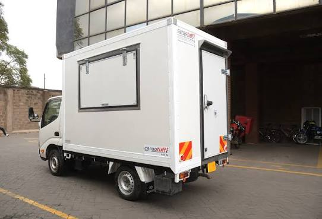

Latest Articles

Why Cold-Pressed Beats Regular Juice — And What the Science Actually Says
There is a lot of marketing noise around cold-pressed juice. Some of it is exaggerated. But some of it is genuinely backed by food science — and understanding the difference matters if you are making a buying decision. We break down exactly what cold-pressing does to a fruit, what nutrients it preserves, and why the 24-hour bottling window we operate within is not just a marketing claim but a nutritional necessity.
Read Article
Meet Samuel Mwenda: The Kilifi Mango Farmer Who Doubled His Acreage in Three Years
Samuel Mwenda has been supplying mangoes to Ngao since 2017. When we first visited his farm in Kilifi County, he was working two acres and selling through brokers who paid whatever they felt like on collection day. Today he farms five acres, owns a water pump, and has two children in secondary school. We sat down with Samuel to hear his story in his own words — and to understand what a reliable, fair-price buyer actually means to a smallholder farmer.
Read Article
Ngao Beverages Expands Distribution to Western Kenya — Kisumu Now Covered
We are excited to announce that Ngao products are now available in Kisumu through our new regional distributor, Lakeview Beverages Agency. This expansion marks our entry into Western Kenya and brings our distribution footprint to five cities nationwide. Brian Kipchoge, our Sales and Distribution Manager, explains what drove the decision, how we selected our Kisumu partner, and what residents of Kisumu and the surrounding region can expect from the rollout over the next six months.
Read Article